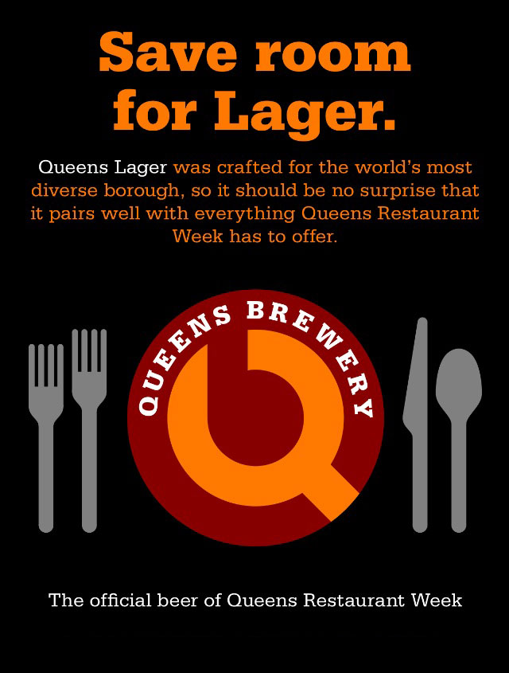
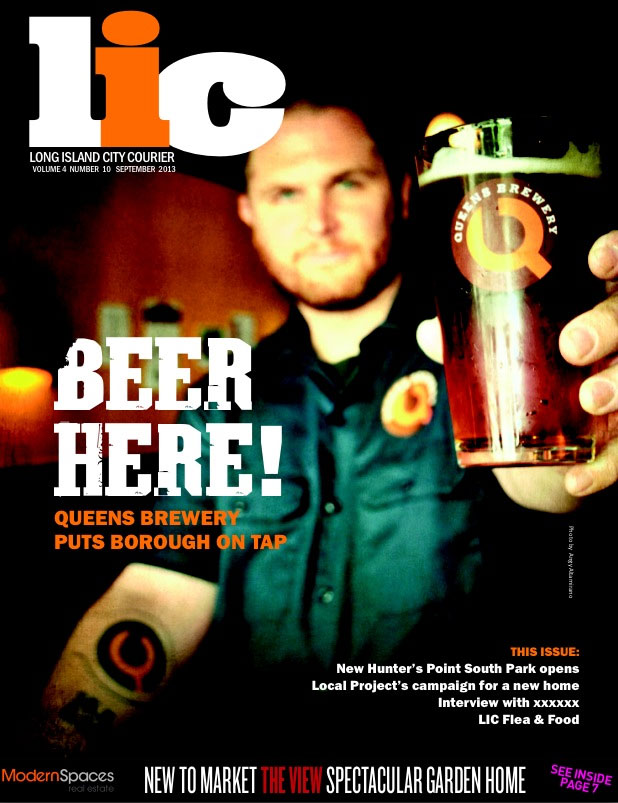

Find a pint near you!
Queens Restaurant Week

We’re the official beer of Queens Restaurant Week! So, save some room for lager at the following locations:
Featured in LIC Courier
Founder Nelson Rockefeller is featured in the Long Island City Courier aka queenscourier.com

Queens Lager
Performed by: Sam Uchiyama, Original Song by: Nelson D. Rockefeller, Beats & Mixing by: Beau Billionaire, Mastering by: Hans DeKline, Karaoke Animation by: Dave Russo, Directed by: Marcin
Continue reading
Why Queens Deserves a Great Brewery
It is difficult to argue with the more than 2.2 million reasons why our borough of Queens deserves a great brewery.
Collectively, we are a global phenomenon of old and new world beer drinkers from the first settlements of Maspeth, Flushing & Jamaica. We are small business owners hailing the streets of Jackson Heights, Long Island City & Astoria pursuing the Queensmerican dream. We are die-hard Mets fans, not fully understanding the meaning of 7th-inning-stretch, huddled together at the Cuckoo’s Nest for 10 innings of Game 6. We are fearless graffiti artists leaving marks of immortality and demarcation at 5Pointz & PS1. We are the roar of the crowd smashing pint glasses from Arthur Ashe as Sampras serves us five heart-stopping U.S. Open Titles. We are more than 72 million passengers of JFK & La Guardia swapping stories of 16oz conquests with perfect strangers. We are Whitestone’s New York Times bringing you the American iconic Sunday crossword as you sip your favorite hops over morning brunch. We are the world within a borough, and we celebrate it distinctively.
We are Queens Brewery, The Melting Barrel.